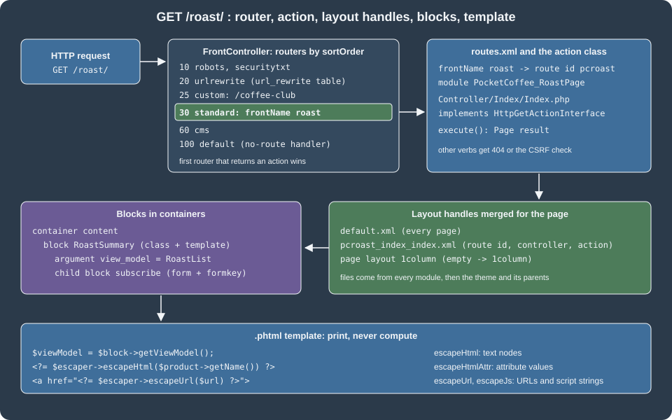

Routing, Controllers, Blocks, Layouts and Templates
|
This content was generated with the assistance of AI and should be verified against the official documentation before being relied on in production. |
This page was written against Magento Open Source and Adobe Commerce 2.4.9 (general availability 2026-05-12) and checked on 2026-10-27. Every example was installed and requested on Mage-OS 3.6.0, the Open Source distribution based on Magento 2.4.9, with the Luma theme, so the URLs, response codes and HTML quoted below come from a running store. The material applies to the in-process PHP storefront of Magento Open Source and of Adobe Commerce on-premises and on cloud infrastructure. Adobe Commerce as a Cloud Service (ACCS) has no PHP modules and no Luma storefront (its storefront is the Commerce Storefront on Edge Delivery Services), so nothing here applies to that edition. Hyvä and other alternative themes keep routes, controllers, layout XML and view models, but replace the templates and the JavaScript, as described in Frontend: Hyvä, PWA Studio and Edge Delivery.
The storefront request path has five parts that you will touch in almost every module: a route that maps a URL to a
module, a controller action that does the work and returns a result, a layout (XML) that lists the blocks of the page,
blocks and view models that supply data, and templates (.phtml files) that print the HTML. The running example is
the Pocket Coffee roast page of the module PocketCoffee_RoastPage: a "Fresh roasts" page at /roast/ (also reachable as
/coffee-club) that lists products with their roast date, a coffee club sign-up form, a JSON endpoint for one batch, a roast
badge on the product page and a footer link. It reads the pc_roast_date and pc_origin attributes created in
EAV and Attributes. The module skeleton and module:enable flow are in
Module Anatomy, and the Admin counterpart of routes and controllers is in
Admin Development.
From URL to HTML

Magento\Framework\App\FrontController asks each router of the area, in sortOrder, to match the request. The first
router that returns an action class wins; the action is executed and returns a result object, and for a page result the
layout is built and rendered. The routers registered in the frontend area of the test installation were read from the
etc/frontend/di.xml files of the modules:
| Sort order | Router | What it matches |
|---|---|---|
10 |
|
|
20 |
|
Any request path stored in the |
25 |
|
The custom router of this page, for |
30 |
|
The |
60 |
|
CMS pages by identifier |
100 |
|
Anything left; it runs the no-route handler and produces the 404 page |
The adminhtml area has the admin router (sort order 10, Magento\Backend\App\Router) and the default router (100) in module-backend.
The standard order of 30 is the value from the Adobe documentation; the other values were read from the test installation.
routes.xml: frontName and route id
A module declares its URL space in etc/frontend/routes.xml (storefront) or etc/adminhtml/routes.xml (Admin). The file
location decides the area. It is validated by urn:magento:framework:App/etc/routes.xsd.
<?xml version="1.0"?>
<config xmlns:xsi="http://www.w3.org/2001/XMLSchema-instance" xsi:noNamespaceSchemaLocation="urn:magento:framework:App/etc/routes.xsd">
<router id="standard">
<route id="pcroast" frontName="roast">
<module name="PocketCoffee_RoastPage"/>
</route>
</router>
</config>Two identifiers look alike and mean different things:
| Attribute | Meaning |
|---|---|
|
The router that handles the route: |
|
The unique internal name of the route. It is the first segment of the layout handle, the prefix of the Admin ACL resource of some controllers and the key used by URL generation internals. |
|
The first segment of the public URL. It is what customers and search engines see; it can equal the route id, but does
not have to, and two modules must not claim the same frontName unless one uses |
|
The module whose |
With these declarations the standard router builds the URL as
<base-url>/<store-code>/<frontName>/<controller>/<action>, where the store code appears only if
"Add Store Code to URLs" is enabled. /roast/ is the same as /roast/index/index: a missing controller or action defaults
to index. The controller segment is the sub-directory under Controller/ (Index, Batch, Webhook) and the action
segment the class name (Index.php, Subscribe.php, Receive.php); both are lower-cased in the URL, and a class
RoastBatch becomes roastbatch, not roast-batch.
The frontName was tested against the layout handle during the run for this page, with a deliberately common mistake: the
first version of the page named its layout file roast_index_index.xml after the frontName. The page returned HTTP 200
with the title "Fresh roasts" but none of the blocks, because the handle is built from the route id, and the log held no
error. Renaming the file to pcroast_index_index.xml made the blocks appear. When a controller works but the layout
does nothing, check the handle first.
before and after: overriding a route
The before attribute puts your module ahead of an existing one on the same route, so that its action classes are found
first:
<config xmlns:xsi="http://www.w3.org/2001/XMLSchema-instance" xsi:noNamespaceSchemaLocation="urn:magento:framework:App/etc/routes.xsd">
<router id="standard">
<route id="customer">
<module name="PocketCoffee_RoastPage" before="Magento_Customer"/>
</route>
</router>
</config>With this declaration a class Controller/Account/Login.php in the module would answer customer/account/login instead of the
core class. It is an escape hatch with the same cost as a preference: it replaces behaviour for every extension, so prefer a
plugin on the core action or an event. The example was not run, as it would change a core route of the shared
installation.
Action classes
An action class is the controller of Magento 2: one class per URL, with one public method execute(). It implements an
HTTP-method interface to declare the verbs it accepts. The most common interfaces are HttpGetActionInterface,
HttpPostActionInterface, HttpPutActionInterface and HttpDeleteActionInterface in Magento\Framework\App\Action. The
framework rejects a request whose verb does not match, and applies the built-in CSRF check to the non-GET verbs.
A page action
<?php
declare(strict_types=1);
namespace PocketCoffee\RoastPage\Controller\Index;
use Magento\Framework\App\Action\HttpGetActionInterface;
use Magento\Framework\View\Result\Page;
use Magento\Framework\View\Result\PageFactory;
/**
* GET /roast/ and GET /coffee-club: the layout handle is pcroast_index_index (route id, not frontName).
*/
class Index implements HttpGetActionInterface
{
public function __construct(private readonly PageFactory $resultPageFactory)
{
}
public function execute(): Page
{
$page = $this->resultPageFactory->create();
$page->getConfig()->getTitle()->set(__('Fresh roasts'));
return $page;
}
}The action takes the PageFactory through the constructor, creates the page result and sets the title through the page
configuration. It never touches the ObjectManager, a response object or echo. Because it implements only
HttpGetActionInterface, any other verb gets "404 Not Found": the test installation returned 404 for
POST /roast/batch/index and for PUT /roast/batch/index against the GET-only JSON action and 404 for
GET /roast/index/subscribe/ against the POST-only action.
Result objects
An action returns a result object, created by the matching factory. The table lists the result types of the Adobe documentation.
| Result | Behaviour |
|---|---|
|
Sets |
|
Returns the data as it was set, without setting a content type. |
|
An external redirect; the browser requests a new URL ( |
|
Calls another action internally; the URL does not change and the browser does not make a new request. |
|
A generic layout result, for rendering any layout without the page wrapper (for example an AJAX fragment). |
|
A full page: page type, page configuration and the default layout handles; the layout XML is rendered into HTML. |
A POST action with messages
<?php
declare(strict_types=1);
namespace PocketCoffee\RoastPage\Controller\Index;
use Magento\Framework\App\Action\HttpPostActionInterface;
use Magento\Framework\App\RequestInterface;
use Magento\Framework\Controller\Result\Redirect;
use Magento\Framework\Controller\Result\RedirectFactory;
use Magento\Framework\Message\ManagerInterface;
use Magento\Framework\Validator\EmailAddress;
use Psr\Log\LoggerInterface;
/**
* POST /roast/index/subscribe: records an interest in the coffee club. The form key is checked by the framework
* because the class implements HttpPostActionInterface.
*/
class Subscribe implements HttpPostActionInterface
{
public function __construct(
private readonly RequestInterface $request,
private readonly RedirectFactory $redirectFactory,
private readonly ManagerInterface $messageManager,
private readonly EmailAddress $emailValidator,
private readonly LoggerInterface $logger
) {
}
public function execute(): Redirect
{
$email = trim((string) $this->request->getPostValue('email'));
$redirect = $this->redirectFactory->create()->setPath('roast/index/index');
if (!$this->emailValidator->isValid($email)) {
$this->messageManager->addErrorMessage(__('Please enter a valid email address.'));
return $redirect;
}
$this->logger->info('PocketCoffee_RoastPage: coffee club interest', ['email' => $email]);
$this->messageManager->addSuccessMessage(__('Thank you, we will write to %1.', $email));
return $redirect;
}
}The action reads the post value through the injected request, validates the email with the framework validator, writes a log
entry and redirects back to the page with a success or an error message. The message manager stores the message in the
mage-messages cookie, which the Luma messages component displays after the redirect. Each of the three outcomes was
requested against the test installation:
| Request | Result | Why |
|---|---|---|
|
302 to |
Normal path. |
The same request with the email |
302 to |
Validator failed, error message. |
The same request with a wrong form key |
302 to the home page; the |
The CSRF check redirects before the action runs. |
|
404 |
The action accepts POST only. |
Form keys with the full page cache
The form key is validated against the session. The storefront pages are cached in the full page cache (FPC) for every
visitor, so the form key is not baked into the HTML: the Magento_PageCache module generates it in the browser, stores it in the
form_key cookie and fills the hidden form_key input of every form (through lib/web/mage/common.js). On the server the plugin RegisterFormKeyFromCookie
copies the cookie value into the session before the action is dispatched. A script or an integration test that posts to a
storefront action without the browser’s JavaScript must therefore send the same value twice, as the cookie form_key and as the
post parameter form_key. That is how the requests above were issued with curl:
K=abcdEFGH12345678 # any 16-character alphanumeric string
curl -s -X POST localhost:8082/roast/index/subscribe/ \
-b "form_key=$K" -d "form_key=$K&email=grace@example.test" \
-o /dev/null -w "%{http_code} -> %{redirect_url}\n"
# 302 -> http://localhost:8082/roast/index/index/The Magento\PageCache\Plugin\RegisterFormKeyFromCookie plugin does that copy. The header X-Requested-With: XMLHttpRequest does
not exempt a request: an AJAX post with a wrong key was refused as well (HTTP 302 on the test installation).
Opting out of the CSRF check
A controller that receives calls from another system cannot carry a form key. It implements CsrfAwareActionInterface, whose
two methods return the exception to throw and whether the request is valid. Returning true from validateForCsrf() skips the
check, and the controller then has to authenticate the caller itself.
<?php
declare(strict_types=1);
namespace PocketCoffee\RoastPage\Controller\Webhook;
use Magento\Framework\App\Action\HttpPostActionInterface;
use Magento\Framework\App\CsrfAwareActionInterface;
use Magento\Framework\App\Request\InvalidRequestException;
use Magento\Framework\App\RequestInterface;
use Magento\Framework\Controller\Result\Json;
use Magento\Framework\Controller\Result\JsonFactory;
/**
* POST /roast/webhook/receive: called by a roaster's system, so there is no form key. It opts out of the
* built-in CSRF check and must authenticate the caller some other way (here: a shared secret header).
*/
class Receive implements HttpPostActionInterface, CsrfAwareActionInterface
{
public function __construct(
private readonly RequestInterface $request,
private readonly JsonFactory $jsonFactory
) {
}
public function createCsrfValidationException(RequestInterface $request): ?InvalidRequestException
{
return null;
}
public function validateForCsrf(RequestInterface $request): ?bool
{
return true;
}
public function execute(): Json
{
$result = $this->jsonFactory->create();
// A real handler compares the header with a secret stored in encrypted configuration.
if ($this->request->getHeader('X-Roaster-Token') !== 'replace-with-a-configured-secret') {
return $result->setHttpResponseCode(403)->setData(['error' => 'Forbidden']);
}
return $result->setData(['received' => true]);
}
}The test installation answered 403 {"error":"Forbidden"} for a wrong token and 200 {"received":true} for the expected
value. The literal in the sample stands for a secret that a real controller reads from encrypted configuration (see
Admin Development) and compares in constant time with hash_equals().
A JSON action
<?php
declare(strict_types=1);
namespace PocketCoffee\RoastPage\Controller\Batch;
use Magento\Framework\App\Action\HttpGetActionInterface;
use Magento\Framework\App\RequestInterface;
use Magento\Framework\Controller\Result\Json;
use Magento\Framework\Controller\Result\JsonFactory;
use Magento\Framework\Webapi\Exception as WebapiException;
use PocketCoffee\Eav\Setup\Patch\Data\AddProductAttributes;
use PocketCoffee\RoastPage\Model\RoastBatches;
/**
* GET /roast/batch/index?sku=PC-ETH-WHL-250 returns the roast data as JSON.
*/
class Index implements HttpGetActionInterface
{
public function __construct(
private readonly RequestInterface $request,
private readonly JsonFactory $jsonFactory,
private readonly RoastBatches $roastBatches
) {
}
public function execute(): Json
{
$result = $this->jsonFactory->create();
$product = $this->roastBatches->getBySku((string) $this->request->getParam('sku'));
if ($product === null) {
return $result->setHttpResponseCode(WebapiException::HTTP_NOT_FOUND)
->setData(['error' => 'Unknown SKU']);
}
$date = $product->getCustomAttribute(AddProductAttributes::ROAST_DATE);
return $result->setData([
'sku' => $product->getSku(),
'roast_date' => $date ? substr((string) $date->getValue(), 0, 10) : null,
]);
}
}GET /roast/batch/index?sku=PC-ETH-WHL-250 returned {"sku":"PC-ETH-WHL-250","roast_date":"2026-10-20"} with the content type
application/json, and an unknown SKU returned 404 with {"error":"Unknown SKU"}. Storefront JSON endpoints like this one are
meant for the storefront’s own AJAX, not for integrations: an integration should use the REST API described in
REST and GraphQL APIs.
A custom router
The standard router needs a frontName. To serve /coffee-club without a url_rewrite row, implement RouterInterface and
register it in the routerList of the frontend area:
<?xml version="1.0"?>
<config xmlns:xsi="http://www.w3.org/2001/XMLSchema-instance" xsi:noNamespaceSchemaLocation="urn:magento:framework:ObjectManager/etc/config.xsd">
<type name="Magento\Framework\App\RouterList">
<arguments>
<argument name="routerList" xsi:type="array">
<item name="pocketcoffee_roast_friendly" xsi:type="array">
<item name="class" xsi:type="string">PocketCoffee\RoastPage\Controller\Router</item>
<item name="disable" xsi:type="boolean">false</item>
<item name="sortOrder" xsi:type="string">25</item>
</item>
</argument>
</arguments>
</type>
</config><?php
declare(strict_types=1);
namespace PocketCoffee\RoastPage\Controller;
use Magento\Framework\App\ActionFactory;
use Magento\Framework\App\ActionInterface;
use Magento\Framework\App\Action\Forward;
use Magento\Framework\App\RequestInterface;
use Magento\Framework\App\RouterInterface;
use Magento\Framework\UrlInterface;
/**
* Maps the friendly URL /coffee-club to the roast page without a URL rewrite row.
*/
class Router implements RouterInterface
{
public function __construct(private readonly ActionFactory $actionFactory)
{
}
public function match(RequestInterface $request): ?ActionInterface
{
if (trim($request->getPathInfo(), '/') !== 'coffee-club') {
return null;
}
// Rewrite the path so that this router does not match again on the next loop of the front controller,
// and keep the requested path as the alias that the rest of the system can read.
$request->setAlias(UrlInterface::REWRITE_REQUEST_PATH_ALIAS, 'coffee-club');
$request->setPathInfo('/roast/index/index');
$request->setModuleName('roast')->setControllerName('index')->setActionName('index');
return $this->actionFactory->create(Forward::class);
}
}The router returns null when it does not recognise the path, so that the next router is asked, and returns a Forward
action when it does. The first version of this router did not change the path and the request failed with LogicException: Front controller reached 100 router match iterations (HTTP 500): a forwarded request is dispatched again, the same router
matched again, and the front controller gave up after 100 loops. Rewriting the path info to the target path, as in the code above,
ends the loop; the original path is kept as the REWRITE_REQUEST_PATH_ALIAS alias. After the change GET /coffee-club returned the same
page as /roast/. For ordinary pretty URLs, a row in url_rewrite (Marketing > SEO & Search > URL Rewrites) or a CMS page
is simpler than a router.
Blocks
A block is a PHP class that prepares data for a template, created from a <block> instruction of a layout file. Most blocks
extend Magento\Framework\View\Element\Template, which provides getTemplate(), getChildHtml(), getBlockHtml(),
getUrl() and $escaper for the template. A block needs no class of its own: a layout can instantiate the stock Template
class, or a core class such as Magento\Catalog\Block\Product\View, which offers getProduct().
<?php
declare(strict_types=1);
namespace PocketCoffee\RoastPage\Block;
use Magento\Framework\View\Element\Template;
/**
* A thin block: it only supplies the heading, everything else comes from the view model argument.
*/
class RoastSummary extends Template
{
public function getHeading(): string
{
return (string) __('Fresh from the roaster');
}
}Block classes are the legacy place for logic. They are hard to unit-test (a large constructor with the template context),
they cannot be reused across templates, and subclassing them for each template is a recurring source of upgrade breakage. The
Adobe documentation therefore recommends view models for new code: ordinary classes that implement
Magento\Framework\View\Element\Block\ArgumentInterface, passed to the block as an argument. They exist since 2.2, and the same
documentation says that helpers in templates are discouraged.
A view model
<?php
declare(strict_types=1);
namespace PocketCoffee\RoastPage\ViewModel;
use Magento\Catalog\Api\Data\ProductInterface;
use Magento\Framework\App\RequestInterface;
use Magento\Framework\Stdlib\DateTime\TimezoneInterface;
use Magento\Framework\UrlInterface;
use Magento\Framework\View\Element\Block\ArgumentInterface;
use PocketCoffee\Eav\Setup\Patch\Data\AddProductAttributes;
use PocketCoffee\RoastPage\Model\RoastBatches;
/**
* Data and URLs for the roast page and the product badge. It holds the logic so the templates only print.
*/
class RoastList implements ArgumentInterface
{
public function __construct(
private readonly RoastBatches $roastBatches,
private readonly RequestInterface $request,
private readonly TimezoneInterface $timezone,
private readonly UrlInterface $urlBuilder
) {
}
public function getOriginFilter(): string
{
return (string) $this->request->getParam('origin', '');
}
/**
* @return ProductInterface[]
*/
public function getProducts(): array
{
$filter = $this->getOriginFilter();
return $this->roastBatches->getProducts(ctype_digit($filter) ? $filter : null);
}
public function formatRoastDate(ProductInterface $product): string
{
$attribute = $product->getCustomAttribute(AddProductAttributes::ROAST_DATE);
if ($attribute === null || !$attribute->getValue()) {
return '';
}
return $this->timezone->formatDate((string) $attribute->getValue(), \IntlDateFormatter::MEDIUM);
}
public function getBadgeText(ProductInterface $product): string
{
$date = $this->formatRoastDate($product);
return $date === '' ? '' : (string) __('Roasted on %1', $date);
}
public function getSubscribeUrl(): string
{
return $this->urlBuilder->getUrl('roast/index/subscribe');
}
public function getBatchUrl(string $sku): string
{
return $this->urlBuilder->getUrl('roast/batch/index', ['_query' => ['sku' => $sku]]);
}
}<?php
declare(strict_types=1);
namespace PocketCoffee\RoastPage\Model;
use Magento\Catalog\Api\Data\ProductInterface;
use Magento\Catalog\Api\ProductRepositoryInterface;
use Magento\Framework\Api\SearchCriteriaBuilder;
use PocketCoffee\Eav\Setup\Patch\Data\AddProductAttributes;
/**
* Reads the products that carry a roast date, optionally narrowed to one origin option id.
*/
class RoastBatches
{
public function __construct(
private readonly ProductRepositoryInterface $productRepository,
private readonly SearchCriteriaBuilder $searchCriteriaBuilder
) {
}
/**
* @return ProductInterface[]
*/
public function getProducts(?string $originId = null): array
{
$this->searchCriteriaBuilder->addFilter(AddProductAttributes::ROAST_DATE, true, 'notnull');
if ($originId !== null && $originId !== '') {
$this->searchCriteriaBuilder->addFilter(AddProductAttributes::ORIGIN, $originId);
}
$this->searchCriteriaBuilder->setPageSize(50);
return array_values($this->productRepository->getList($this->searchCriteriaBuilder->create())->getItems());
}
public function getBySku(string $sku): ?ProductInterface
{
try {
return $this->productRepository->get($sku);
} catch (\Magento\Framework\Exception\NoSuchEntityException) {
return null;
}
}
}The view model carries every decision: which products to show, how to format the date, which URL to link to. It uses the
product repository with a SearchCriteria filter on the EAV attributes (see
Service Contracts and Repositories), the timezone service for the
store’s date format and the URL builder for the links. The layout instantiates it through the object manager, so its
constructor dependencies are injected like those of any service. It is shared by the page and by the product badge, because the
same class is configured as an argument of two blocks. The ArgumentInterface marker is required: without it the argument is
rejected when the layout is built.
Layout XML
A layout file declares the structure of a page: which containers exist, which blocks fill them, which template each block uses and which arguments it receives. Files are merged from all modules and the theme, so a module can add to any page without editing it.
File names and handles
A layout handle is the file name without the extension. The merged result for a request is built from a list of handles:
-
defaultis added to every page. -
<routeId>_<controller>_<action>, herepcroast_index_index, is added for the controller that handled the request. The route id comes fromroutes.xml, not the frontName. -
Handles added by the result or the layout itself:
catalog_product_viewfor a product page,catalog_category_viewfor a category,cms_page_viewfor a CMS page, acustomer_logged_inorcustomer_logged_outhandle, and handles that other files include with<update handle="..."/>. -
The page layout (
1column,2columns-left,2columns-right,3columns,empty) is a separate file underpage_layout/that defines the wireframe; thelayoutattribute of the<page>element selects it.
Layout files of a module live under view/frontend/layout/ (storefront) or view/adminhtml/layout/ (Admin), and
view/base/layout/ is loaded in both areas. A theme extends a module’s layout by adding a file with the same name in
<theme_dir>/<Vendor_Module>/layout/, which is merged after the module file; it replaces the module file completely if it
is placed in layout/override/base/ (replaces the module’s file) or layout/override/theme/<Vendor>/<parent>/ (replaces the
parent theme’s file).
The page layout file of the example
<?xml version="1.0"?>
<page layout="1column" xmlns:xsi="http://www.w3.org/2001/XMLSchema-instance" xsi:noNamespaceSchemaLocation="urn:magento:framework:View/Layout/etc/page_configuration.xsd">
<head>
<css src="PocketCoffee_RoastPage::css/roast.css"/>
</head>
<body>
<referenceContainer name="page.top">
<container name="pocketcoffee.roast.banner" htmlTag="div" htmlClass="pocketcoffee-roast-banner">
<block class="Magento\Framework\View\Element\Text" name="pocketcoffee.roast.banner.text">
<action method="setText">
<argument name="text" xsi:type="string" translate="true">Roasted every Tuesday</argument>
</action>
</block>
</container>
</referenceContainer>
<move element="page.main.title" destination="content" before="-"/>
<referenceBlock name="breadcrumbs" remove="true"/>
<referenceContainer name="content">
<block class="PocketCoffee\RoastPage\Block\RoastSummary" name="pocketcoffee.roast.summary" template="PocketCoffee_RoastPage::roast/list.phtml">
<arguments>
<argument name="view_model" xsi:type="object">PocketCoffee\RoastPage\ViewModel\RoastList</argument>
</arguments>
<block class="Magento\Framework\View\Element\Template" name="pocketcoffee.roast.subscribe" as="subscribe" template="PocketCoffee_RoastPage::roast/subscribe.phtml">
<arguments>
<argument name="view_model" xsi:type="object">PocketCoffee\RoastPage\ViewModel\RoastList</argument>
</arguments>
</block>
</block>
</referenceContainer>
</body>
</page>The file uses these instructions:
| Instruction | What it does |
|---|---|
|
Root of a page configuration file; the optional |
|
Adds a static asset to the page head ( |
|
Addresses an existing container or block to add children, change arguments or remove it. The |
|
A wrapper without a template; it renders its children in order and optionally a tag around them. The banner of the example
rendered as |
|
A block instance. |
|
Passes data to the block, readable as |
|
Calls a method of the block with arguments. Supported for compatibility; prefer arguments. |
|
Moves an element to another parent. The example moved the page title into the content column, and the page title block
moved from before to inside |
|
Includes another handle’s instructions. |
<remove> removes only static assets from the head; use the remove attribute of referenceBlock or referenceContainer
for blocks. A reference to an element that does not exist does not fail: it writes a Broken reference line to
var/log/system.log, as the log of the test installation showed for several core sidebar elements that the Luma theme does not
define, so grep the log after a layout change.
Extending existing pages
The product page badge adds a block to the existing container product.info.main of catalog_product_view, after the price
container. It uses the core block class Magento\Catalog\Block\Product\View only because that class provides getProduct().
<?xml version="1.0"?>
<page xmlns:xsi="http://www.w3.org/2001/XMLSchema-instance" xsi:noNamespaceSchemaLocation="urn:magento:framework:View/Layout/etc/page_configuration.xsd">
<body>
<referenceContainer name="product.info.main">
<block class="Magento\Catalog\Block\Product\View" name="pocketcoffee.roast.badge" template="PocketCoffee_RoastPage::product/badge.phtml" after="product.info.price">
<arguments>
<argument name="view_model" xsi:type="object">PocketCoffee\RoastPage\ViewModel\RoastList</argument>
</arguments>
</block>
</referenceContainer>
</body>
</page>The default.xml file adds the footer link on every page. Magento\Framework\View\Element\Html\Link\Current renders a link that is marked
current (a <strong>) on its own page, which the test response showed for "Fresh roasts" on /roast/.
<?xml version="1.0"?>
<page xmlns:xsi="http://www.w3.org/2001/XMLSchema-instance" xsi:noNamespaceSchemaLocation="urn:magento:framework:View/Layout/etc/page_configuration.xsd">
<body>
<referenceBlock name="footer_links">
<block class="Magento\Framework\View\Element\Html\Link\Current" name="pocketcoffee-roast-link">
<arguments>
<argument name="label" xsi:type="string" translate="true">Fresh roasts</argument>
<argument name="path" xsi:type="string">roast</argument>
</arguments>
</block>
</referenceBlock>
</body>
</page>Names such as product.info.main, product.info.price, footer_links and page.top are defined by core modules and the
Luma theme, and the Luma theme defines some of them (header.links is Luma’s, while top.links belongs to Magento_Theme),
so a module that targets a theme-defined name works only with themes that define it. The theme-independent names are those in
the Magento_* module layouts.
Caching and layout
All pages are cacheable in the full page cache by default, but only GET and HEAD requests are cacheable. One block with
cacheable="false" makes the whole page uncacheable, which is why a per-customer greeting should be a customer-data section
rendered by JavaScript, not a non-cacheable block. A block can also cache its own HTML (cache_lifetime and cache_key
arguments), which matters when the block runs an expensive query; the test page has no block cache.
Templates
A template is a PHP file with HTML (.phtml) in view/<area>/templates/. A layout reference PocketCoffee_RoastPage::roast/list.phtml
means app/code/PocketCoffee/RoastPage/view/frontend/templates/roast/list.phtml. In the file, $block is the block instance,
$escaper is the Magento\Framework\Escaper, and $secureRenderer is the SecureHtmlRenderer (the core templates declare both in a docblock at the top
for static analysis, as the example does). A template should only print: loops,
conditions and escaping are fine; queries, formatting rules and business decisions belong in the view model.
<?php
/**
* @var \PocketCoffee\RoastPage\Block\RoastSummary $block
* @var \Magento\Framework\Escaper $escaper
* @var \Magento\Framework\View\Helper\SecureHtmlRenderer $secureRenderer
*/
/** @var \PocketCoffee\RoastPage\ViewModel\RoastList $viewModel */
$viewModel = $block->getViewModel();
$products = $viewModel->getProducts();
$filter = $viewModel->getOriginFilter();
?>
<div class="pocketcoffee-roast">
<h2><?= $escaper->escapeHtml($block->getHeading()) ?></h2>
<?php if ($filter !== ''): ?>
<p class="pocketcoffee-roast__filter" data-origin="<?= $escaper->escapeHtmlAttr($filter) ?>">
<?= $escaper->escapeHtml(__('Filter: %1', $filter)) ?>
</p>
<?php endif; ?>
<?php if (!$products): ?>
<p><?= $escaper->escapeHtml(__('No roasts yet.')) ?></p>
<?php endif; ?>
<ul class="pocketcoffee-roast__list">
<?php foreach ($products as $product): ?>
<li class="pocketcoffee-roast__item">
<a href="<?= $escaper->escapeUrl($viewModel->getBatchUrl($product->getSku())) ?>">
<?= $escaper->escapeHtml($product->getName()) ?>
</a>
<span class="pocketcoffee-roast__badge"><?= $escaper->escapeHtml($viewModel->getBadgeText($product)) ?></span>
</li>
<?php endforeach; ?>
</ul>
<?= $block->getChildHtml('subscribe') ?>
</div>
<?php
$script = "document.querySelector('.pocketcoffee-roast').setAttribute('data-ready', '1');";
?>
<?= /* @noEscape */ $secureRenderer->renderTag('script', [], $script, false) ?><?php
/**
* @var \Magento\Framework\View\Element\Template $block
* @var \Magento\Framework\Escaper $escaper
*/
/** @var \PocketCoffee\RoastPage\ViewModel\RoastList $viewModel */
$viewModel = $block->getViewModel();
?>
<form class="pocketcoffee-roast__subscribe" method="post" action="<?= $escaper->escapeUrl($viewModel->getSubscribeUrl()) ?>">
<?= $block->getBlockHtml('formkey') ?>
<label for="pc-roast-email"><?= $escaper->escapeHtml(__('Coffee Club email')) ?></label>
<input type="email" id="pc-roast-email" name="email" required="required"/>
<button type="submit" class="action primary"><span><?= $escaper->escapeHtml(__('Join')) ?></span></button>
</form><?php
/**
* @var \Magento\Catalog\Block\Product\View $block
* @var \Magento\Framework\Escaper $escaper
*/
/** @var \PocketCoffee\RoastPage\ViewModel\RoastList $viewModel */
$viewModel = $block->getViewModel();
$text = $viewModel->getBadgeText($block->getProduct());
?>
<?php if ($text !== ''): ?>
<div class="pocketcoffee-roast__badge"><?= $escaper->escapeHtml($text) ?></div>
<?php endif; ?>The rendered markup of GET /roast/ on the test installation (Luma, the sample product PC-ETH-WHL-250) was:
<div class="pocketcoffee-roast">
<h2>Fresh from the roaster</h2>
<ul class="pocketcoffee-roast__list">
<li class="pocketcoffee-roast__item">
<a href="http://localhost:8082/roast/batch/index/?sku=PC-ETH-WHL-250">
Single-origin beans, Ethiopia, whole bean, 250 g [hello] </a>
<span class="pocketcoffee-roast__badge">Roasted on Oct 20, 2026</span>
</li>
</ul>
<form class="pocketcoffee-roast__subscribe" method="post" action="http://localhost:8082/roast/index/subscribe/">
<input name="form_key" type="hidden" value="GhCsEThjUGoZjGet" /> <label for="pc-roast-email">Coffee Club email</label>
...
</form>
</div>(The suffix "[hello]" in the product name comes from an unrelated smoke-test plugin that is installed on the shared test
store and shows that plugins also run on getName() in templates; the product badge printed "Roasted on Oct 20, 2026" on
the product page the same way.)
Escaping
Every dynamic value is escaped for the context in which it is printed, as late as possible. The rules of the Adobe security
guide, with the methods of $escaper, are:
| Context | Method |
|---|---|
Text between tags |
|
An HTML attribute value ( |
|
A URL in |
|
A string inside JavaScript |
|
JSON in a |
no escaping, if the JSON was produced by |
JSON in an attribute |
|
A value that is already HTML ( |
none; never escape twice |
An integer, boolean or |
a type cast is enough |
The request of the example with ?origin=<b>x</b> shows the effect on the test installation: the data-origin attribute printed
<b>x</b> and the paragraph Filter: <b>x</b>; the visitor sees the characters, the browser sees no tag.
The same input in an unescaped template is a reflected XSS. Escape also translated strings that
contain markup: escapeHtml(__('... <a href="%1">...'), ['a']).
Inline scripts and CSP
An inline <script> in a template is a Content Security Policy problem. The Adobe guidance is to print inline scripts through
SecureHtmlRenderer, which can register a hash or a nonce for them, and which is also the way to attach event listeners
without onclick attributes. The last lines of list.phtml do that:
<?php
$script = "document.querySelector('.pocketcoffee-roast').setAttribute('data-ready', '1');";
?>
<?= /* @noEscape */ $secureRenderer->renderTag('script', [], $script, false) ?>On the test installation the call produced <script>document.querySelector(...)...</script> and the page contained
data-ready. The store ran with the storefront CSP in report-only mode, in which the browser only reports violations; in
restrict mode, which is the default on payment pages since 2.4.7, only the whitelisted hashes run. The policy is configured in
Security. In the test response no hash for this script was visible in the
Content-Security-Policy-Report-Only header, so the registration of hashes was not confirmed here.
Overriding a template
A theme replaces a module template by placing a file of the same name in <theme_dir>/<Vendor_Module>/templates/, for
example app/design/frontend/Vendor/theme/Magento_Catalog/templates/product/view/addtocart.phtml. It then no longer
receives upstream fixes, so prefer a layout argument, a view model or a plugin on a block method when you only need different data.
Template path hints show which file renders a block: in the Admin at Stores > Configuration > Advanced > Developer > Debug
(the settings live under dev/debug/*), available in developer mode.
Pitfalls
-
Handle names use the route id. A layout file named after the frontName is silently ignored.
-
A frontName that another module already owns shadows or is shadowed depending on module load order; give each module a distinctive frontName and use
beforeonly when you mean to override. -
Forgetting an HTTP-method interface. A class that implements only
ActionInterfaceaccepts every verb, and the CSRF protection of the framework then does not apply to the POST requests it receives. -
Returning a value from
execute()that is not a result object. The framework needs a result (orResponseInterface); anechofollowed byexitbreaks the response pipeline, the cache and the tests. -
Using the
ObjectManageror a helper in a template. Both bypass dependency injection and make the template impossible to test; use a view model. -
A non-cacheable block disables the whole-page cache for every page that includes it; put customer-specific content in a customer-data section instead.
-
Escaping at the wrong time. Escaping in the block or the view model and again in the template shows entities such as
&amp;. Return raw values and escape in the template, as the example does. -
Stale generated code. After changing the constructor of a block, controller or view model, remove
generated/code/<Vendor>/<Module>in developer mode; in production mode runsetup:di:compile. -
Static files in production mode. The roast stylesheet is served on demand in developer mode; production mode needs
setup:static-content:deployandcache:flush. -
ACCS and Hyvä. ACCS cannot run this code at all, and a Hyvä store needs its own template files and Alpine components for the same blocks, so check the compatibility of the theme before relying on the Luma templates.
What was and was not run
On Mage-OS 3.6.0 (Magento 2.4.9 base, PHP 8.5.12, Luma): php -l and phpcs --standard=Magento2 on the module, XML validation
of module.xml, routes.xml, di.xml and the three layout files against the framework XSDs, module:enable, setup:upgrade and
cache:flush, and HTTP requests for the page (200, title, markup), the friendly URL, the escaped filter, the POST action with and
without a valid form key, the method restrictions, the webhook, the JSON action, the product page badge and the footer link.
Not run: a browser (the JavaScript that fills the form key and the messages component), production mode with static content
deployment, a Hyvä store, a theme override, block caching and the ifconfig and before/after instructions beyond the
documented behaviour.